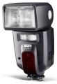

58 AF-2 Digital 闪光灯，最大闪光指数为58，灯头变焦范围为24-105mm（使用广角扩散板后可覆盖12mm焦段）；采用了子母灯设计。
4.8 总体超越佳能580-2。可能用过此灯就不再想用所谓原厂闪灯了。
光足，回电快，频闪佳，子母灯，设置、操作简单实用，重量轻。在非佳能相机也可使用。有声音提示闪光正常和充电完毕，有助避免误操作。我试用尼康型的在佳能机器仍可自动正常闪光和补光，这一点说明书无解，经销商也讲不清楚。 我买入价：3080EMB.
无热靴快速锁紧装置，这点佳能580-2有优势。灯套太简陋和单薄。这点也是580-2有优势。
很棒的一个闪光灯，功率很大，色温很准，尤其是换了金属接脚，稳定性提高了很多。另外就是可以当主灯用，遥控副灯。还有一个自带的副灯，在打跳灯的时候可以正面补光，如果拉出反射板，还能出来微小的双灯瞳孔。 高速频闪很强大，每秒可以闪50次
色温准，功率大，辅助测光准，遥控功能比较强，频闪和造型光很强。
回电时间稍微长了点儿，菜单需要一个按钮一个按钮来按。 配件太少，不送柔光罩。